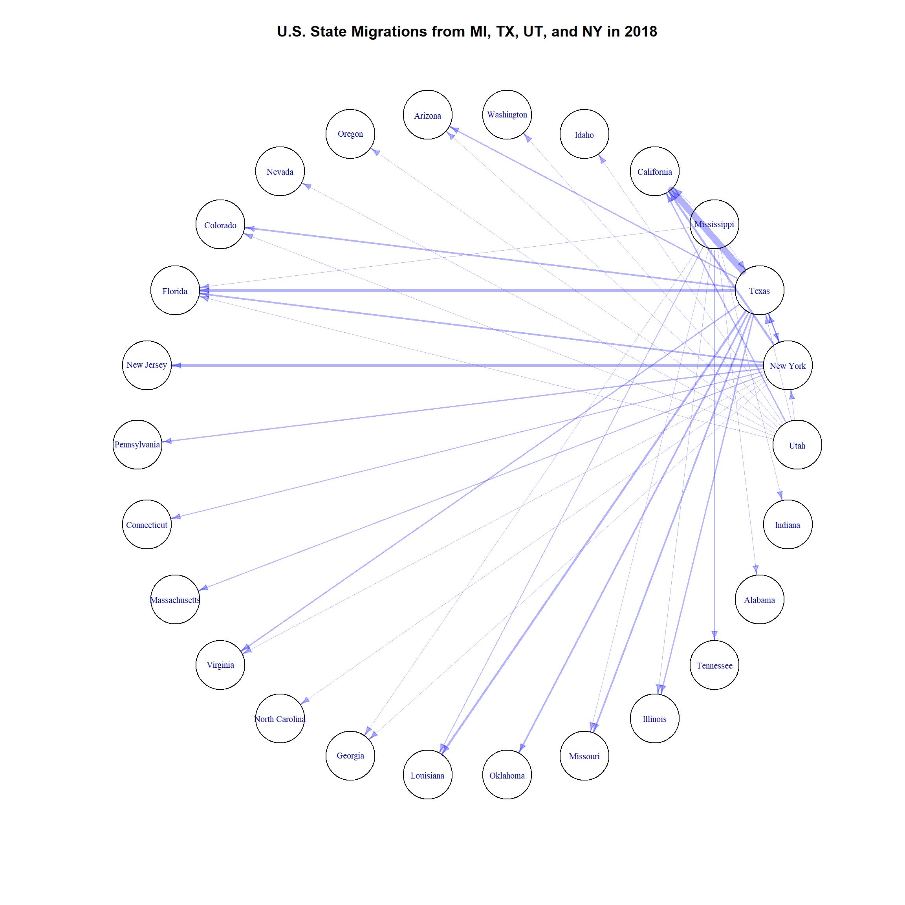

import pandas as pd
stMigs = pd.read_excel("data/State_to_State_Migrations_Table_2018.xls",
skiprows=4)
stMigs = stMigs.iloc[:71,:]
# Pull out states being put in Network
states = ["New York","Texas","Utah","Mississippi"]
new = stMigs.loc[stMigs.loc[:,"Unnamed: 0"].isin(states),:]
new = pd.concat([stMigs.iloc[:3,:],new],axis=0)
# Pull out the columns that have the count estimates of migrations
estimates = new.loc[:,new.iloc[2,:] == "Estimate"]
estimates = pd.concat([new.iloc[:,0],estimates.iloc[1:,:]],axis=1)
estimates = estimates.reset_index(drop=True)
estFnl = pd.concat([estimates.iloc[1:2,:],estimates.iloc[3:,:]],axis=0)
estFnl.columns = estFnl.iloc[0,:].values
estFnl = estFnl.iloc[1:,:-4]
# Reformat the df to have the right columns and remove useless ones
estFnl = pd.concat([estFnl.iloc[:,:1],estFnl.iloc[:,5:]],axis=1)
estFnl.columns = ["Destination"] + list(estFnl.columns[1:])
finalDF = estFnl.T
finalDF.columns = finalDF.iloc[0,:].values
finalDF = finalDF.iloc[1:,:]
# Convert counts to float dtype
finalDF = finalDF.astype(float)
# Put together final network DF with top 10 locations for each state
networkDF = pd.concat([finalDF.nlargest(10,"Utah").Utah,
finalDF.nlargest(10,"New York").loc[:,"New York"],
finalDF.nlargest(10,"Texas").Texas,
finalDF.nlargest(10,"Mississippi").Mississippi],axis=0)
networkDF = networkDF.reset_index()
source = ["Utah"]*10+["New York"]*10+\
["Texas"]*10+["Mississippi"]*10
network = pd.DataFrame({"source":source,
"target":networkDF.loc[:,"index"].values,
"count":networkDF.iloc[:,1].values})
network.to_csv("data/networkDF.csv")network <- read.csv("data/networkDF.csv")
file.remove("data/networkDF.csv")## [1] TRUEnetwork$X <- NULLlibrary(igraph)
network_plot <- graph_from_data_frame(network[,1:2])
network_plot <- set_edge_attr(network_plot,"weight",value = network$count)
E(network_plot)$width <- E(network_plot)$weight/10000
E(network_plot)$arrow.size <- 0.6
lay <- layout_in_circle(network_plot)
plot(network_plot,layout=lay,vertex.label.cex=0.7,
edge.color = adjustcolor("blue",alpha.f = 0.3),
vertex.color = adjustcolor("black",alpha.f = 0),curved=TRUE,
main="U.S. State Migrations from MI, TX, UT, and NY in 2018")